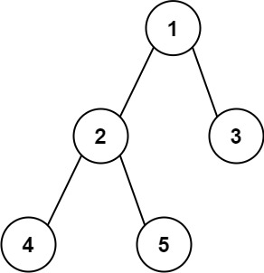

543. 二叉树的直径
后序算深度：经过每个结点的最长路径边数 = 左深 + 右深，全局 ans 取最大——直径不一定经过根。
思路
- 递归返回子树深度（空树 0、叶子 1），
ans是全局变量，记目前见过的最长边数。 - 在每个结点用
左深 + 右深更新 ans：两条向下的臂在当前结点拼成一条路径。 - 直径可能不经过根，所以每个结点都要算一遍，不能只在根上算。
图解
最优解
1class Solution {2 // 全局记最长路径的边数3 private int ans = 0;4 5 public int diameterOfBinaryTree(TreeNode root) {6 depth(root);7 return ans;8 }9 10 // 后序：返回 node 子树深度（空树 0，叶子 1）11 private int depth(TreeNode node) {12 if (node == null) return 0;13 int left = depth(node.left);14 int right = depth(node.right);15 // 经过 node 的最长路径边数 = 左深 + 右深16 ans = Math.max(ans, left + right);17 return Math.max(left, right) + 1;18 }19}题目
给你一棵二叉树的根节点，返回该树的 直径 。
二叉树的 直径 是指树中任意两个节点之间最长路径的 长度 。这条路径可能经过也可能不经过根节点 root 。
两节点之间路径的 长度 由它们之间边数表示。
示例 1：

输入：root = [1,2,3,4,5] 输出：3 解释：3 ，取路径 [4,2,1,3] 或 [5,2,1,3] 的长度。
示例 2：
输入：root = [1,2] 输出：1
提示：
- 树中节点数目在范围
[1, 104]内 -100 <= Node.val <= 100
题面取自力扣当前版本。
数据快照 2026-11-04。题面版权归力扣所有，本站点仅供本人学习使用，请勿对外发布。